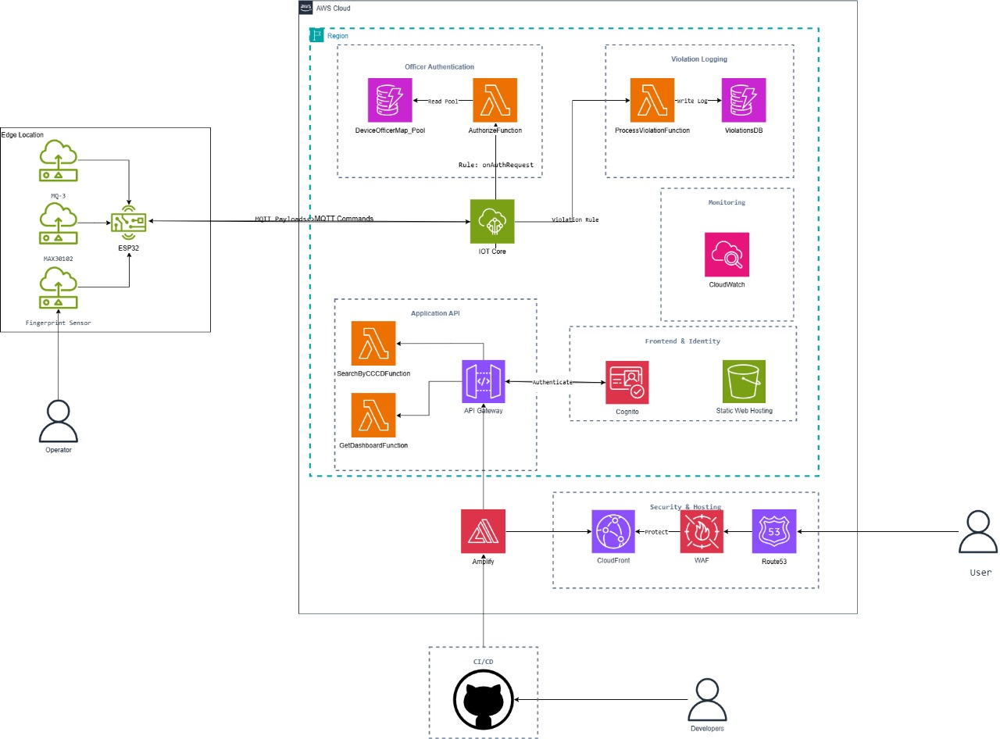

Bản đề xuất
Hệ thống Ghi nhận Vi phạm Nồng độ cồn qua IoT
Một giải pháp AWS Serverless An toàn với Xác thực Sinh trắc học và DevSecOps
1. Tóm tắt Dự án (Executive Summary)
Dự án này xây dựng một nền tảng IoT-Cloud toàn diện để thực thi và ghi nhận các quy định về nồng độ cồn. Hệ thống được thiết kế với hai thành phần rõ rệt:
- Thiết bị (Edge) Chuyên dụng: Dành cho nhân viên vận hành, yêu cầu xác thực vân tay (hybrid) trước khi cho phép sử dụng, đối chiếu SlotID vân tay với “pool dữ liệu” (DynamoDB) trên Cloud để mở khóa.
- Cổng Tra cứu (Web) Công cộng: Một trang web công khai, cho phép bất kỳ ai cũng có thể truy cập để xem dashboard và tự tra cứu lịch sử vi phạm bằng CCCD.
Backend được xây dựng hoàn toàn serverless. Quy trình phát triển frontend được tự động hóa bằng AWS Amplify làm framework CI/CD, trong khi hạ tầng backend được quản lý bằng Terraform (IaC) và triển khai qua pipeline AWS CodePipeline, tuân thủ DevSecOps.
2. Bối cảnh và Giải pháp
Vấn đề đặt ra
Quy trình kiểm tra thủ công hiện tại tồn tại nhiều điểm yếu nghiêm trọng về mặt xác thực, minh bạch và quản lý dữ liệu.
- Thiếu Tính Xác thực (Accountability): Hệ thống không có cơ chế để xác thực danh tính của nhân viên vận hành (ai là người kiểm tra?). Điều này dẫn đến rủi ro về lạm dụng thiết bị, sai sót trong quy trình và thiếu trách nhiệm giải trình khi có sự cố hoặc khiếu nại xảy ra.
- Thiếu Tính Minh bạch (Transparency): Người dân sau khi bị kiểm tra không có một kênh chính thức, nhanh chóng và đáng tin cậy để tra cứu lại kết quả vi phạm của chính mình.
- Dữ liệu Phân tán và Không thể Tra cứu: Dữ liệu vi phạm (nếu có được lưu) thường nằm phân tán trên sổ sách hoặc các file excel rời rạc, không được quản lý tập trung. Điều này khiến cho việc tra cứu lịch sử vi phạm của một cá nhân (ví dụ: theo CCCD) trở nên bất khả thi hoặc cực kỳ tốn thời gian, gây lãng phí nguồn lực và làm giảm lòng tin của công chúng.
Giải pháp đề xuất
Hệ thống giải quyết vấn đề bằng cách:
- Xác thực người vận hành: Sử dụng cảm biến vân tay và AWS IoT Core để đảm bảo chỉ nhân viên được cấp phép mới có thể mở máy.
- Lưu vết (Auditing): Mọi sự vụ vi phạm đều được tự động gắn ID của nhân viên vận hành.
- Tập trung hóa dữ liệu: Dữ liệu vi phạm được gửi qua IoT Core, xử lý bởi Lambda và lưu trên DynamoDB.
- Cổng tra cứu công cộng: Website công khai được triển khai bằng Amplify + CloudFront, có API được bảo vệ bởi AWS WAF.
- Tự động hóa phân tách CI/CD:
- Frontend CI/CD qua Amplify (kết nối GitHub).
- Backend CI/CD qua CodePipeline + Terraform.
Lợi ích đầu tư:
- Tăng minh bạch, giảm sai sót con người.
- Triển khai nhanh, chi phí thấp (~14–16 USD/tháng).
- Áp dụng DevSecOps hiện đại.
3. Kiến trúc Giải pháp
Dịch vụ AWS được sử dụng
| Nhóm |
Dịch vụ |
Mục đích |
| IoT & Ingestion |
AWS IoT Core |
Nhận và điều phối dữ liệu từ thiết bị |
| Compute |
AWS Lambda |
4 hàm: Authorize, ProcessViolation, GetDashboard, SearchByCCCD |
| Database |
Amazon DynamoDB |
2 bảng: DeviceOfficerMap_Pool, ViolationsDB (2 GSI) |
| API |
Amazon API Gateway |
Cung cấp endpoint REST công cộng |
| Security |
AWS WAF |
Bảo vệ API và web |
| Frontend Hosting |
S3 + CloudFront + Route 53 |
Lưu trữ và phân phối web |
| Frontend Framework |
AWS Amplify |
CI/CD và build frontend |
| DevOps Backend |
CodePipeline + CodeBuild + Terraform |
Tự động hóa backend IaC |
| Monitoring |
CloudWatch |
Giám sát toàn hệ thống |
Thiết bị phần cứng (Edge)
- ESP32, MQ-3 (Cảm biến cồn)
- MAX30102 (Cảm biến tim/oxy)
- AS608 (Cảm biến vân tay)
- Keypad 4x4, LCD 1602

Luồng xử lý chính
- Xác thực (Hybrid):
- Nhân viên quét vân tay → SlotID → Gửi lên
auth/request → IoT Core → Lambda AuthorizeFunction → Truy vấn DynamoDB → Lệnh unlock/deny.
- Ghi vi phạm:
- Khi máy mở khóa → Đo nồng độ cồn → Nếu vượt ngưỡng → Nhập CCCD → Gửi
violations/new → IoT Core → Lambda ProcessViolationFunction → Lưu DynamoDB.
- Giao diện Web công cộng:
- SPA React/Vue sử dụng Amplify libraries gọi API Gateway.
4. Kế hoạch Triển khai Kỹ thuật
| Giai đoạn |
Thời gian |
Nhiệm vụ chính |
| Thiết kế & IaC |
Tuần 1–2 |
Hoàn thiện kiến trúc, viết Terraform |
| Firmware (ESP32) |
Tuần 3–4 |
Xây dựng luồng xác thực & ghi vi phạm |
| Backend |
Tuần 5–7 |
Viết Lambda, cấu hình IoT & API Gateway |
| Frontend |
Tuần 8–9 |
Xây dựng giao diện web (React + Amplify) |
| CI/CD & Bảo mật |
Tuần 10–12 |
Thiết lập pipeline, WAF, CloudWatch |
5. Timeline & Milestones
| Tháng |
Giai đoạn |
Milestone |
| Tháng 1 |
Thiết kế + Firmware |
ESP32 xác thực nhân viên và gửi vi phạm mẫu |
| Tháng 2 |
Backend + API |
API hoạt động và trả dữ liệu qua trình duyệt |
| Tháng 3 |
Frontend + CI/CD |
Web công cộng hoạt động, deploy tự động |
6. Ước tính Ngân sách (Tháng)
- Dịch vụ AWS:
| Dịch vụ |
Chi phí (USD) |
Ghi chú |
| AWS WAF |
6.00 |
1 Web ACL + Rule |
| Route 53 |
0.50 |
1 Hosted Zone |
| CodePipeline |
1.00 |
Pipeline backend |
| Amplify Build + Host |
2.72 |
Build 100 phút + 20GB transfer |
| CloudWatch |
2.80 |
5GB log + 3 alarms |
| IoT Core |
1.00 |
10.000 tin nhắn |
| CodeBuild |
0.00 |
Trong hạn miễn phí |
| Lambda |
0.22 |
25.000 lượt gọi |
| API Gateway |
0.07 |
20.000 request |
| DynamoDB |
0.02 |
On-demand |
Tổng cộng: ~14.33 USD/tháng (~14–16 USD thực tế)
- Phần cứng: 25$ (ESP32 và các sensor)
7. Đánh giá Rủi ro
| Rủi ro |
Mức độ Ảnh hưởng |
Khả năng |
Biện pháp giảm thiểu |
| Bảo mật PII (CCCD) |
Cực cao |
Cao |
Thêm xác thực 2 bước hoặc ẩn 4 số CCCD |
| Mất kết nối mạng |
Cao |
Trung bình |
ESP32 lưu tạm log và đồng bộ lại khi có mạng |
| Lỗi cảm biến |
Cao |
Trung bình |
Hiệu chuẩn định kỳ, lọc nhiễu tín hiệu |
| Lỗi CI/CD |
Trung bình |
Trung bình |
Áp dụng staging + code review cho IaC |
8. Kết quả Dự kiến
- Kỹ thuật: Hệ thống IoT–Cloud full-stack, tích hợp sinh trắc học, backend serverless và pipeline DevSecOps hoàn chỉnh.
- Ứng dụng: Tăng tính minh bạch và trách nhiệm cho lực lượng kiểm tra.
- Học thuật: Đồ án tốt nghiệp thể hiện khả năng làm chủ AWS Cloud, IoT và DevOps hiện đại.